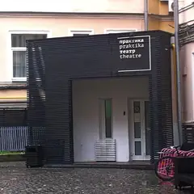

У метро · ЦАО
Куда сходить у метро «Пушкинская»
Для 8 мест из нашего каталога ближайшая станция — «Пушкинская» (ЦАО): 4 ресторана или кафе, 3 театра и 1 бар. Например, Кафе «Пушкинъ», «Ленком Марка Захарова» и «Московский театр мюзикла». Недорогих, примерно до 1 500 ₽ на человека, — 1. 10 готовых планов проходят через эту станцию — например, «Юнона и Авось» и «Пушкинъ», с маршрутом пешком между точками.
- 8 мест
- 10 планов
Места у метро «Пушкинская» 8
Тверской бул., 26А
Дворянская усадьба XIX века: библиотека, аптекарский зал и русская кухня. 10:00–23:00.
Подробнее и маршрут: Кафе «Пушкинъ»Позвать сюда: Кафе «Пушкинъ»
Фото: Mike1979 Russia, CC BY-SA 3.0 · Wikimedia Commons
ул. Малая Дмитровка, 6
Новое
Театр в здании Купеческого клуба 1909 года. Здесь до сих пор идёт легендарная рок-опера «Юнона и Авось» — классика для романтичного вечера.
Подробнее и маршрут: Ленком Марка ЗахароваПозвать сюда: Ленком Марка Захарова
Фото: Никонико962, CC BY-SA 4.0 · Wikimedia Commons
Пушкинская пл., 2
Новое
Театр Михаила Швыдкого в бывшем кинотеатре «Россия» на Пушкинской: зал на 1650 мест и собственные постановки — мюзиклы, комедии и даже рок-опера.
Подробнее и маршрут: Московский театр мюзиклаПозвать сюда: Московский театр мюзикла
Фото: Никонико962, CC BY-SA 4.0 · Wikimedia Commons
Тверская ул., 23
Смелый современный театр: спектакли идут на сцене, на лестнице и даже во дворе.
Подробнее и маршрут: Электротеатр «Станиславский»Позвать сюда: Электротеатр «Станиславский»
Фото: Stanislavsky Electrotheatre, CC BY-SA 4.0 · Wikimedia Commons
Большой Палашёвский пер., 2
В гиде Michelin 2021
Необистро у Патриарших: завтраки до 16:00, авторские коктейли вечером.
Тверская ул., 23, стр. 1
Легендарный коктейльный бар: классика, рояль, жёлтые стены и окна в пол.
Малая Дмитровка, 3
Советская забегаловка с пельменями и недорогими настойками — работает до двух ночи.
Подробнее и маршрут: Горбуфет «Пельменная»Позвать сюда: Горбуфет «Пельменная»
Страстной бул., 7, стр. 1
Испанский ресторан и бар Folk Team на Страстном.


Готовые планы 10
- Ленком Марка Захарова · Театр · м. Пушкинская
- 8 минут пешкомКафе «Пушкинъ» · Ресторан
В Ленкоме до сих пор играют «Юнону и Авось» — рок-оперу о любви, под которую стоит подгадать дату, а потом минут восемь пешком до кафе «Пушкинъ» с библиотекой и аптекарским залом.
Открыть план: «Юнона и Авось» и «Пушкинъ»Позвать сюда: «Юнона и Авось» и «Пушкинъ»
Фото: Никонико962, CC BY-SA 4.0 · Wikimedia Commons
- Музей Булгакова · Музей · м. Маяковская
- 8 минут пешкомPinch · Ресторан
Сначала «Нехорошая квартира» в Музее Булгакова, а потом восемь минут пешком до Pinch у Патриарших: завтраки там подают до 16:00, так что бранч получится в самый раз.
Открыть план: Булгаков и поздний бранчПозвать сюда: Булгаков и поздний бранч
Фото: Usolt, CC BY 3.0 · Wikimedia Commons
- Кафе «Пушкинъ» · Ресторан · м. Пушкинская
- 7 минут пешкомNoor Electro · Коктейльный бар
Ужин в дворянской усадьбе XIX века, а потом коктейли у рояля в легендарном баре в семи минутах пешком.
Открыть план: Кафе «Пушкинъ» и коктейль в NoorПозвать сюда: Кафе «Пушкинъ» и коктейль в Noor
Фото: Mike1979 Russia, CC BY-SA 3.0 · Wikimedia Commons
- Кафе «Пушкинъ» · Ресторан · м. Пушкинская
- 7 минут пешкомNoor Electro · Коктейльный бар
Ужин в дворянской усадьбе XIX века, а потом коктейли у рояля в Noor Electro в семи минутах пешком.
Открыть план: Кафе «Пушкинъ» и NoorПозвать сюда: Кафе «Пушкинъ» и Noor
Фото: Mike1979 Russia, CC BY-SA 3.0 · Wikimedia Commons
- Музей Булгакова · Музей · м. Маяковская
- 7 минут пешкомПатриаршие пруды · Пруд и сквер
- 5 минут пешкомPinch · Ресторан
«Нехорошая квартира» №50 в Музее Булгакова, потом круг у Патриарших прудов из «Мастера и Маргариты» и поздний завтрак в Pinch — их там подают до 16:00.
Открыть план: Нехорошая квартира и ПатрикиПозвать сюда: Нехорошая квартира и Патрики
Фото: Usolt, CC BY 3.0 · Wikimedia Commons
- Электротеатр «Станиславский» · Театр · м. Пушкинская
- 1 минута пешкомNoor Electro · Коктейльный бар
Смелая постановка в Электротеатре, а после — Noor в том же здании.
Открыть план: Спектакль и коктейль в одном домеПозвать сюда: Спектакль и коктейль в одном доме
Фото: Stanislavsky Electrotheatre, CC BY-SA 4.0 · Wikimedia Commons

- Театр «Практика» · Театр · м. Маяковская
- 5 минут пешкомPinch · Ресторан
Камерный спектакль новой драмы, а после — обсудить всё за коктейлями в Pinch.
Открыть план: Театр «Практика» и коктейлиПозвать сюда: Театр «Практика» и коктейли
Фото: Valera N. Trubin, CC BY-SA 4.0 · Wikimedia Commons
- Noor Electro · Коктейльный бар · м. Пушкинская
- 10 минут пешкомРовесник · Бар и сцена
Начать с классических коктейлей в легендарном Noor, где рояль и окна в пол, а потом десять минут пешком в трёхэтажный Ровесник на концерт или вечеринку с танцами.
Открыть план: Коктейли на ТверскойПозвать сюда: Коктейли на Тверской
- Padron · Испанский ресторан и бар · м. Пушкинская
Испанский ресторан и бар Folk Team на Страстном: ужин и бар под одной крышей, никуда не надо переезжать.
- Горбуфет «Пельменная» · Пельменная · м. Пушкинская
Советская забегаловка с пельменями и настойками до двух ночи.
Открыть план: Ночная пельменнаяПозвать сюда: Ночная пельменная

Как позвать
- Выбери план, место или событие — в карточке адрес, цены и маршрут в Яндекс Картах.
- Нажми «Позвать сюда» — соберётся приглашение-игра для свидания или голосование для компании.
- Отправь ссылку в любой мессенджер: тебе ответят, а компания отметит, куда и когда может. Бесплатно и без регистрации.